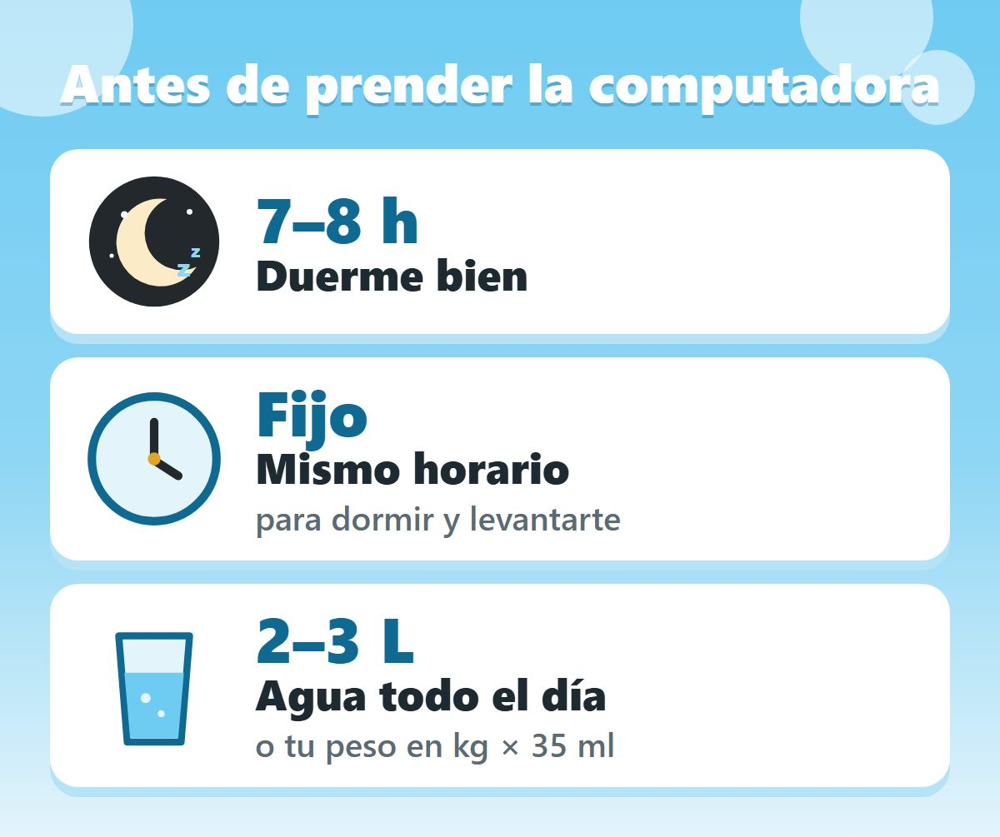
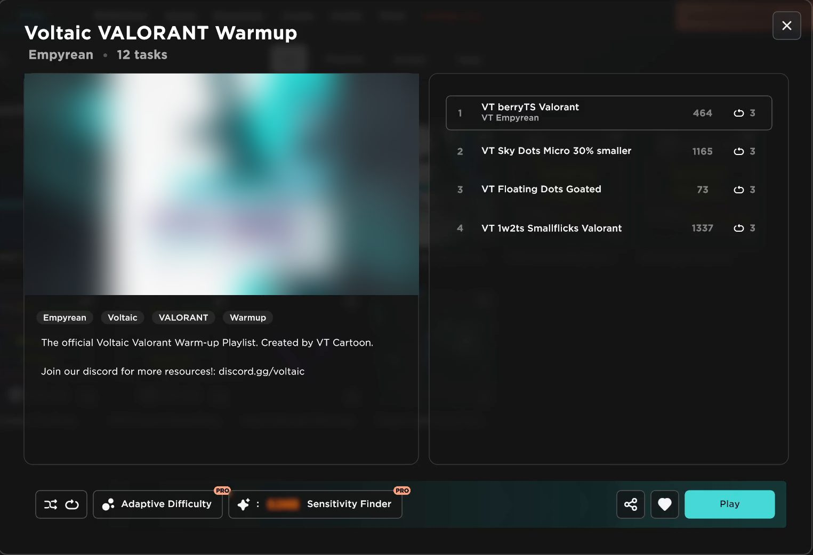
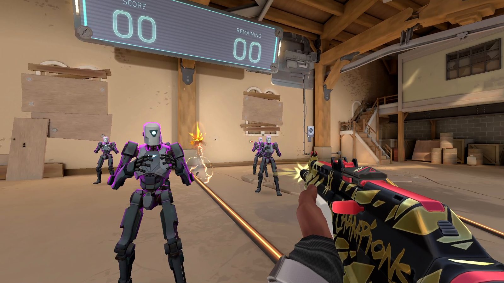
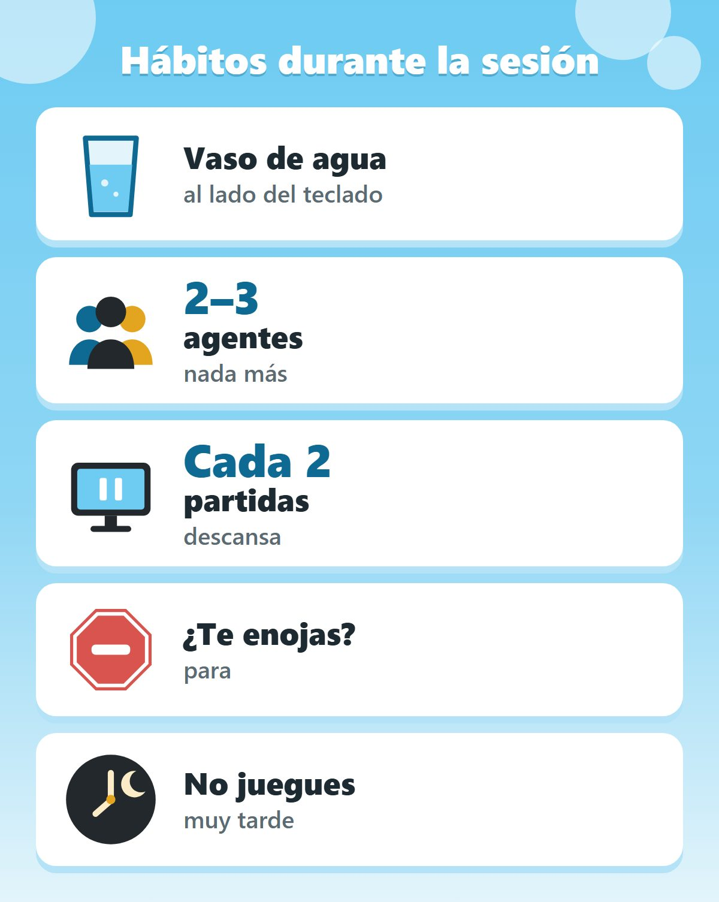

¿Cómo calentar en Valorant? La rutina con la que llegué a Radiante
Respuesta corta
La rutina con la que llegué a Radiante tiene cuatro pasos: dormir de 7 a 8 horas en horario fijo y estar hidratado, calentar el aim en Aimlabs con la playlist Voltaic Valorant Warmup, calentar las mecánicas en el campo de tiro (flicks, counter strafing, spray transfer y dead zoning) y cerrar con un deathmatch con intención. No es para mejorar: es para que entres a cada partida al 100% de tus capacidades.
Descarga la rutina resumida
Todo el video en dos páginas: la rutina y un checklist del día para imprimir o tener abierto al lado.
Esto no es regla: es lo que me ha funcionado a mí siendo 3 veces Radiante.
Por qué necesitas una rutina antes de jugar
Piensa en todo lo que pasa en una partida. No estás teniendo duelos todo el tiempo: una ronda dura minuto y medio, y de eso un duelo real son solo segundos. El resto es caminar, rotar y esperar. Valorant es un juego de duelos separados por mucho tiempo muerto.
Ese es el problema. Si entras a la partida frío, no tienes forma de calentar bien a media partida, porque no hay repeticiones suficientes. Terminas usando las primeras rondas para calibrarte, y eso no te cuesta solo unos cuantos duelos: te cuesta rondas, partidas y subir de rango.
Por eso la rutina no es para mejorar. Existe para una sola cosa: que cuando entres a una partida, estés al 100% de tus capacidades.
Paso 1: dormir bien y estar hidratado
El primer paso empieza antes de prender la computadora, y es el único que no entrena ninguna mecánica. Sé cómo suena, pero todo lo demás de la rutina depende de esto: dormir mal o estar deshidratado es lo único que directamente te quita tiempo de reacción, y no importa cuánto te prepares antes de jugar. En un juego con un tiempo por kill tan corto como Valorant, eso pesa mucho.
Además, esto hace que tu rendimiento sea medible de un día a otro. Si un día duermes 5 horas y al otro 8, no tienes forma de saber si mejoraste o simplemente dormiste bien.
- Duerme de 7 a 8 horas, en un horario fijo. Esto es algo que nadie te dice: aunque duermas tus 8 horas, si cambias la hora a la que te duermes y te levantas, tu rendimiento igual se ve afectado. Si alguna vez dormiste bien y aun así te sentiste cansado, puede ser por esto.
- Hidrátate durante todo el día, no solo al jugar. Se recomiendan de 2 a 3 litros de agua al día, o tu peso en kilos por 35 mililitros.
Esta es la base para que tus capacidades cognitivas estén en su máximo rendimiento.

Paso 2: calentar el aim en Aimlabs
Ahora sí, prendemos la computadora. Abre Aimlabs y busca la playlist Voltaic Valorant Warmup. Voltaic es la comunidad más grande de aimers del mundo y diseñó esta playlist específicamente para Valorant, con ejercicios que te preparan para tus duelos.
- 4 ejercicios, 3 repeticiones cada uno. Se enfocan en microajustes, velocidad y precisión al apuntar.
- En los ejercicios 1, 2 y 3, pon la retícula hacia donde crees que va a ir el objetivo y dispara cuando entre en tu mira. Estás practicando crosshair placement.
- El ejercicio 4 son solo flicks.
No practiques tracking. Es un error enorme que veo siempre. El tracking es una habilidad válida para el aim en general, pero en Valorant casi no aparece: la inmensa mayoría de las veces usas tu aim con microajustes, microflicks, pre-aim o crosshair placement. Eso es lo que vale la pena calentar. Si en los ejercicios te pones a trackear al objetivo, vas a reaccionar más lento y vas a crear un mal hábito para Valorant.

Paso 3: calentar las mecánicas en el campo de tiro
Esta es la parte que casi nadie hace. En un aim trainer trabajas solo el aim, y eso no es suficiente: Valorant tiene mecánicas que Aimlabs no puede replicar, como el movimiento, el retroceso, la precisión de disparo o hasta cómo se ve el juego. Por eso, después de Aimlabs, entra al campo de tiro de Valorant y haz 4 ejercicios de mínimo 1 minuto cada uno, siempre con tu rifle de preferencia:
- Flicks. Priorizando velocidad y precisión. Varía la altura y la distancia de los objetivos.
- Counter strafing con ráfagas de 2 balas. Que la distancia de los counter strafes sea lo más variable posible, y varía también la distancia con los bots. A mí me gusta agregar una ronda más desde adentro, entre los bots. Mira el short explicativo del counter strafing aquí.
- Spray transfer. Intenta que los transfers sean realistas: rara vez vas a hacer uno con un flick tan largo. En esos casos hasta te conviene moverte para que el enemigo falle y disparar después. Así vas a ser mucho más constante que tirando un flick.
- Dead zoning. Cambia de objetivo mientras te mueves de izquierda a derecha, disparando en el momento exacto en que cambias de dirección. Varía el largo de tu movimiento y la distancia con los bots. Mira el short explicativo del dead zoning aquí.
Retícula para el counter strafing y el dead zoning: te ayuda a ver mejor tu movimiento. Impórtala con este código en la configuración de la retícula:
0;c;1;s;1;P;c;1;o;1;d;1;z;1;s;0;m;1;0t;1;0l;2;0v;2;0o;2;0a;1;0m;1;1b;0;S;s;0.5;o;1

Paso 4: un deathmatch con intención
Termina el calentamiento con un deathmatch o un team deathmatch. Aquí es donde casi todos se equivocan: no te pongas en piloto automático. Sé consciente de cada duelo y tómalo con intención: crosshair placement, movimiento, haz que el enemigo falle y calma. Le estás dando la última pulida a todo lo que acabas de calentar. No estás tratando de ganar el deathmatch.
Antes de saltarte el calentamiento
Así es como yo calentaba para llegar a Radiante. Hay gente que va a necesitar más tiempo, gente que va a necesitar menos y gente que va a preferir otros ejercicios. Lo que sí te recomiendo siempre es calentar, y de preferencia dentro de Valorant, por las diferencias mecánicas que te mencioné.
Piénsalo así: si dos personas se enfrentaran en Valorant y tuvieras que apostar todos tus ahorros, ¿a quién le apostarías? ¿Al que le dedicó 10 minutos a calentar o al que acaba de prender su computadora? En cada partida te estás jugando tus puntos para subir de rango. Piensa en eso antes de saltarte el calentamiento.
Hábitos durante la sesión
Llegar a tu nivel es una cosa, pero sostenerlo durante toda la sesión es otra completamente distinta. Estos son los hábitos que me acompañaron en mis partidas:
- Siempre ten agua. Distinto a la hidratación del día: un vaso de agua mientras juegas, y vas tomando poco a poco. Una partida son por lo menos 30 minutos de concentración; si en 3 partidas no has tomado nada, que no te sorprenda jugar peor.
- Juega pocos agentes. Cada agente es un set entero de habilidades, timings y decisiones diferentes. Si juegas demasiados, no vas a perfeccionar ninguno. Juega 2 o 3 agentes: vas a progresar más rápido y ser más constante.
- Descansa cada 2 partidas, sin excepción. Levántate, estírate, camina un poco, ve al baño, lo que sea. Si eres de los que se enfrían con un descanso, vuelve un ratito al campo de tiro antes de buscar partida.
- Si te enojas, para. Muchas veces el tilt no viene de jugar mal, viene de la fatiga: cuando estás fresco, una mala ronda te da información; después de 3 horas, esa misma ronda solo te enoja. También te vas a frustrar por gente tóxica, y aunque no es justo, conviene parar un momento o incluso dejar de jugar. Arrastrar el enojo de una partida a la siguiente solo hace que juegues mal.
- No juegues muy tarde. Contradice por completo el paso 1: duermes mal y mañana arrancas desde abajo. La sesión de hoy también influye en la de mañana.

La regla que seguí en todo mi ascenso: juega para mejorar, no para ganar
Esta es la única regla que seguí durante todo mi ascenso, y la que sí hizo la diferencia: juega para mejorar, no para ganar.
Sé que puede sonar frustrante, y créeme que pasé por eso mismo. Pero subir de rango es una consecuencia de mejorar, no al revés. Si solo te enfocas en subir, no ves el panorama completo: te quedas con el resultado de la partida y no ves tu realidad. ¿Te comunicaste bien con tu equipo? ¿Jugaste con la agresividad correcta? ¿Aprovechaste las debilidades de tu enemigo?
Concéntrate en tu desempeño ronda tras ronda. No acumules resultados anteriores: mira cada ronda como una ronda individual y observa qué hiciste bien, qué hiciste mal y qué puedes mejorar.
Preguntas frecuentes
¿Cuánto dura el calentamiento?
La rutina completa dura de 20 a 30 minutos, sobre todo por el deathmatch: la playlist de Aimlabs, los 4 ejercicios del campo de tiro (mínimo 1 minuto cada uno) y un deathmatch.
¿Cuál es el calentamiento mínimo que recomiendas?
Los 4 ejercicios del campo de tiro, 1 minuto cada uno, y un deathmatch. Eso son de 10 a 15 minutos.
¿Por qué no practicar tracking para Valorant?
Porque en Valorant casi no aparece. La mayoría de las veces apuntas con microajustes, microflicks, pre-aim o crosshair placement.
¿Basta con calentar en un aim trainer?
No. Un aim trainer solo trabaja el aim. El movimiento, el retroceso, la precisión de disparo y cómo se ve el juego solo los calientas dentro de Valorant, por eso después de Aimlabs voy al campo de tiro.
¿Cada cuánto hay que descansar entre partidas?
Cada 2 partidas, sin excepción: levántate, estírate o camina un poco. Si te enfrías, vuelve un rato al campo de tiro antes de buscar partida.